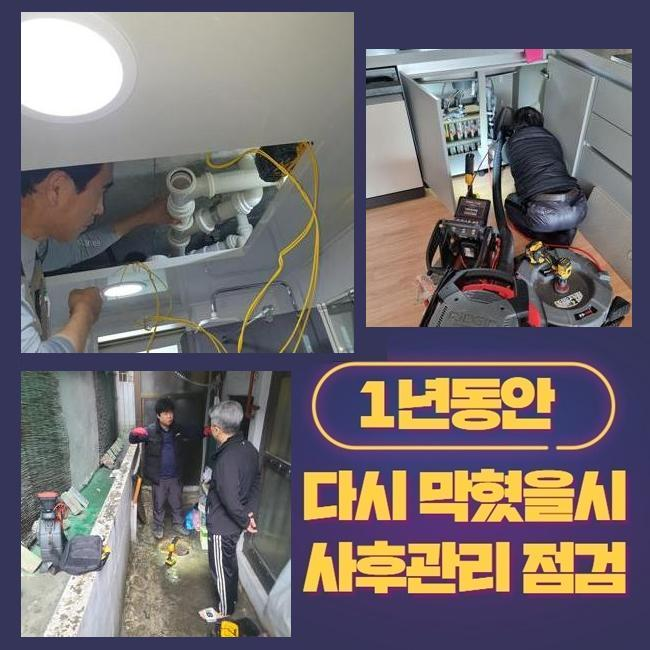
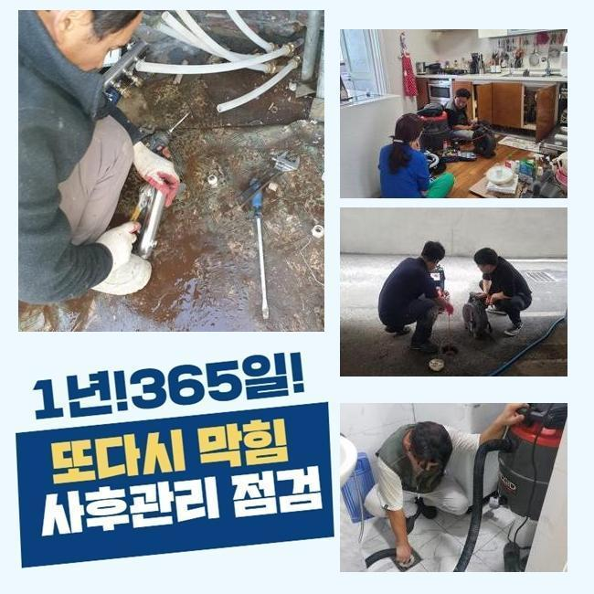
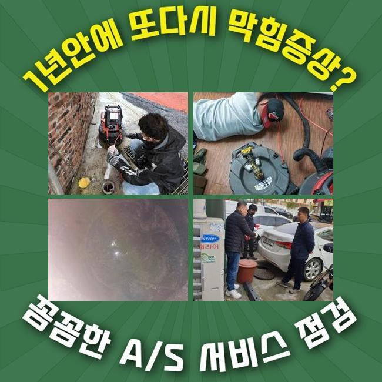
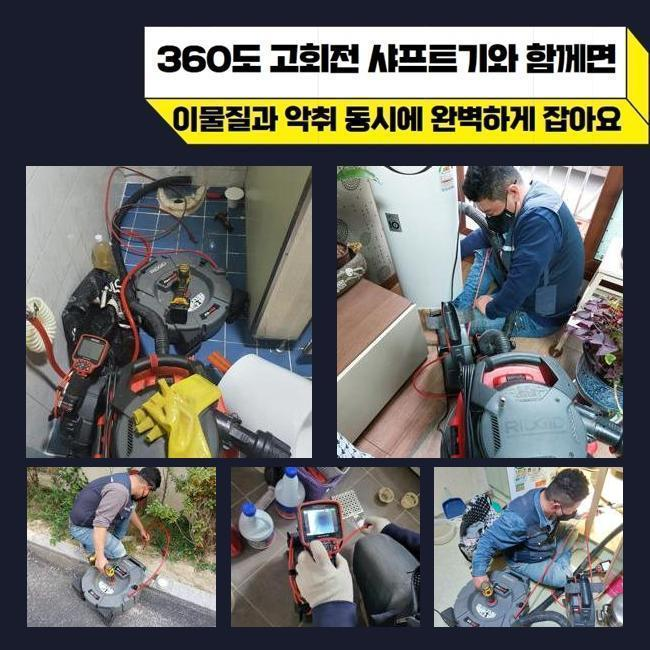
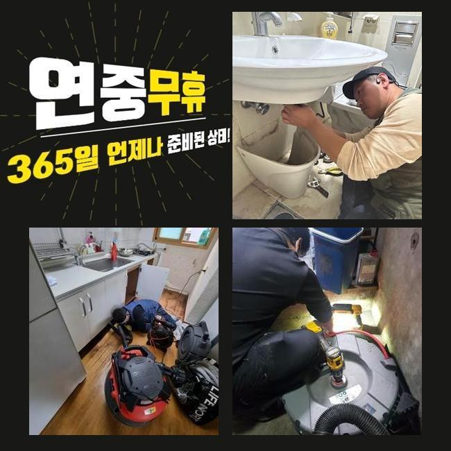
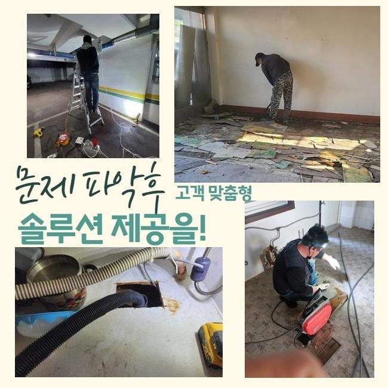

🏠 강서구 화곡동세탁실막힘 오쇠동 배수구뚫기 해결방법
용인 싱크대막힘 전문 시공 후기

📋 작업 개요
- 위치: 용인
- 서비스 유형: 싱크대막힘, 하수구막힘, 배관막힘, 역류해결, 뚫는업체, 배관청소, 고압세척, 악취차단
- 작업 일시: 2025. 2. 28. 17:50
- 업체명: 하수구수사대 (010-5615-2118)
🔍 문제 상황
강서구 화곡동세탁실막힘 오쇠동 배수구뚫기 해결방법
아늑해야할 가정안에서 간헐적으로 생겨나는 문제들이 있죠
그것들 중 배관막힘을 말씀드릴수 있어요
하수관이 차단되면 오취가 퍼지는것을 비롯하여 생활중의 불편을 증가시키죠
관로의 막힘상황으로 욕실사용도 어려워지고 역류상황까지 일어난다면 더욱더 사태는 악화일로로 가게되겠죠
본 글에서는 가정집의 배관막힘이 일어나 여러종류의 장비들을 써서 처치한 절차를 설명드릴게요
의뢰인께선 주방시설 근처에 설비된 드럼세탁기기에서 배수문제가 발발하였다며 저희쪽에 전화하셨는데요
차량안에 샤프트기기와 배관카메라 등의 진단기기를 챙긴후 고객세대로 이동했습니다
당도하니 고약한 냄새가 올라왔고 이물질이 토출되어 있는 정황까지 관측할수 있었답니다
세탁기를 가동시켜 배수하려고 시도했으나 되레 넘쳐버리는 형국이 발발하였다고 하소연하셨어요
간단하게 물만 토출되는게 아닌 여러가지 오물들도 나오는 모습이었어요
어떤 설비에서는 개수대와 다용도실의 배관이 연결된 정황도 목격되는데요
그것에 관계된 부분도 조사하기로 합니다
막힘문제를 명확히 파악하려 의뢰인께 싱크대 쪽이나 기타 공간이 정체되었거나 역류증세는 없었는지를 확인해봤어요

🔎 원인 분석
💡 전문가 진단: 정밀 진단 장비를 사용하여 슬러지의 고착 여부를 판명하고 타격/세척 작업을 실시했습니다.
며칠전에 물이 안내려가 상점에서 구입한 베이킹소다와 식초를 투입하신적이 있다 말하셨어요
그것을 근거로 개수대쪽의 배수관에 정체의 이유가 있을거라고 여겨졌어요
저희측이 내방드린 현장의 트러블을 정리하려고 증상을 파악하기로 합니다
내시경기기를 이용해 하수도안을 검정하기로 결단하였어요
배수문이 막혀 내부에 내시경을 넣지 못할땐 방수기능이 탑재된 청소기기로 배관의 침전물을 제거하게 되죠
이러한 과정으로 수리시간을 단축할수 있답니다
세척중에 여러 슬러지와 미세물질이 배출되었는데요
하지만 해당 업무만으로는 본원적인 막힘의 까닭이 어떠한 것인지에 대해 간파해내지는 못했죠
간단히 흡입기기로 정리하지 못하는 것들이 많아서 즉시 배관내시경을 투입시켜 관로의 상황을 조사하기로 결정합니다
잔재들을 세밀하게 분석해보니 해변가에서 자주보는 흙과 모래같은 것들이었어요
빨래를 하는 과정에서 배출된 상황일 여지가 높았어요
의뢰자께 여행일정이 있으셨는지 여쭤보았더니 동해안 쪽의 해변가에 놀러가셨다고 알려주셨어요
우선하여 눈에띄는 잔재들을 처치하고 좀더 실질적으로 세척작업을 속행하기로 했죠
그러면서 하단부위까지 처치가능한 기계들을 접목해보기로 했답니다

🔧 작업 과정
내시경cctv를 쓰는건 막힘의 사유를 세세하게 조사하고 고장을 처리하기 위함입니다
석션기기로 세척을 끝내고 노즐 끝단에 존재하는 내시경카메라로 배수관 내측을 진단해 보았습니다
심층부까지 확인했고 근본적인 트러블의 사유를 인지할수가 있었네요
이렇듯 배관에서 일어난 고장은 여러종류의 변수들에 의해서 나타나게 되며 처리방책이 단조로운것도 아니랍니다
그렇기때문에 전문적인 테크닉과 장비를 토대로 시공을 해나가야 원만하게 끝마칠수 있는거죠
혹여 대강 막힘문제를 정리하려든다면 상황이 증가할수 있단 것을 꼭 기억해주세요
하수관 안쪽부분을 배관내시경으로 관찰해 보았어요
관로의 실측값은 생각보다 큰편이고 구성도 난삽하여 바로 이해하기에는 어려움이 있죠
이러한 상황에서는 가느다란 내시경cctv가 커다란 구실을 해주고 있죠
내시경기기를 이용해서 관로안을 면밀하게 확인하였더니 다양한 노폐물들과 자그마한 알갱이들이 엉겨붙은 상태였습니다
해당 물질은 적체되기 쉬우며 바위와 같이 경화될수가 있어요
미세한 잔재들은 물과 함께 바깥으로 배출되겠으나 동시에 모래알들이 관로로 투입된다면 이처럼 막힘이 생길수 있는거죠
거기에 더해 사태가 지속된다면 관로에 이물막이 생성되기도 하죠
잔재들의 성질에 따라 적용하는 기계가 달라져요
가령 손수건 등의 커다란 부피의 물체가 막혀있다면 고리를 이용하여 끄집어낸 뒤에 흡입장비로 하수구 하단부를 청소해야 됩니다
혹시라도 이러한 과정을 생략하고 곧바로 분쇄공정에 들어가면 배수관 속이 한층 혼잡해질수가 있는거죠
노폐물들이 특정 부위에 상당량 상존할때는 그것을 쪼개주는 분쇄공정을 시행하곤 하죠
이장소는 돌맹이들과 엉켜있었기 때문에 샤프트장비를 동원하여 소제한다음에 뚫어보기로 하였습니다
이번에 내방드린 곳에서는 관로안을 채웠던 노폐물들을 세정한다음 배관카메라로 다시금 점검을 실시했어요
그후 잔류하는건 분쇄기기로 깔끔히 정리한후 즉시 물이 잘 내려가는지 확인하였는데요
이상없이 속시원히 소멸되는걸 목견하게 되었습니다
시공과정에서 배출된 폐기물들을 전부 정리해서 치우는것으로 시공을 마무리하였죠


✅ 작업 완료
해당하는 막힘현상을 방지하기 위해선 정기적으로 하수구 살펴보았고 세척해야 하겠죠
싱크대쪽 배수관에서는 음식물이 막힘을 유발하고 역류까지 일으키는 경우가 허다하죠
이럴때에는 망설이지말고 즉각 기술자에게 의뢰하시는 편이 마땅합니다
일반인이 다룰수있는 범위는 근본적인 처방에 다다르기 힘들고 트러블이 더욱더 나빠지는 케이스도 존재하기 때문이에요
전문가의 스케일링 및 고압청소는 간략히 일과를 정상화시켜 주는것만이 아닌 청결성을 지속시키는데도 중요하답니다
그리고 해당 사태가 계속적으로 방치된다면 인근 거주자들에게도 손실을 주기도 한다는걸 알아두시길 부탁드립니다




⚠️ 주방 싱크대 배관 막힘 예방 수칙
- ✅ 기름기가 묻은 식기나 프라이팬은 설거지 전 키친타올로 반드시 기름때를 닦아내세요.
- ✅ 주기적으로 싱크대 개수대에 뜨거운 물을 가득 받아 한 번에 내려 배관 내부 기름을 씻어내세요.
- ✅ 배수구 거름망을 미세한 필터로 사용하시고 음식물 찌꺼기가 틈으로 새어 들지 않게 관리하세요.
- ✅ 베이킹소다와 식초를 뜨거운 물과 함께 일주일에 한 번씩 부어주면 배관 살균과 막힘 예방에 좋습니다.
💡 핵심 정리
- 확실한 장비 작업(내시경 점검 및 샤프트 스케일링)으로 원인을 뿌리 뽑습니다.
- 작업 후 1년 이내에 동일한 부위 재발 시 100% 무상 A/S 서비스를 보장합니다.
- 서울 · 경기 · 인천 전 지역에 24시간 언제든 긴급 출동할 수 있도록 항시 대기 중입니다.
❓ 자주 묻는 질문 (FAQ)
🚨 용인 싱크대막힘 문제로 고민이신가요?
정확한 원인 진단과 확실한 시공으로 재발 없는 해결을 약속드립니다.
24시간 긴급 출동 | 서울 · 경기 · 인천 전지역 | 1년 내 재발 시 무상 A/S